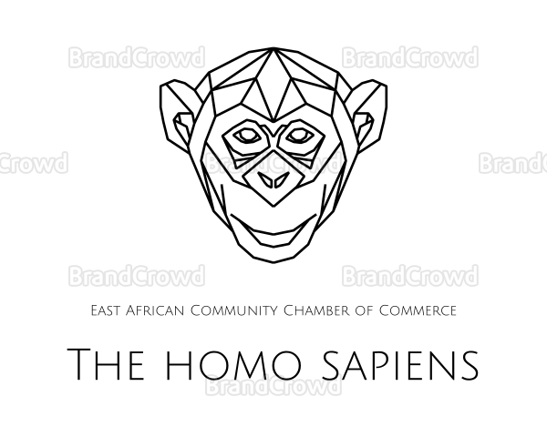

Domain name: thehomospaiens.com
Overview
Purpose
The main purpose of the site is to keep people informed and updated of what's happening inside and outside the chamber. The organizations coverage and the deadly pandemic makes building an online home inevitable. Owing to the fact that the pandemic has turned everything upside down changing people's way of living and working. The website also intends to make joining the organiztion by the prospective candidates as easy and paperless as possible.
Branding
Website Logo
Site Map
The Site Map of a site is just like it sounds…it is a map of the pages in a site and how they are related and linked together. From the map above we can see that we will eventually have the Home page and 2 sub or child pages.
The lines that connect them all together indicate that each page should be accessible from any other page, it is essentially showing us the global navigation for the site.